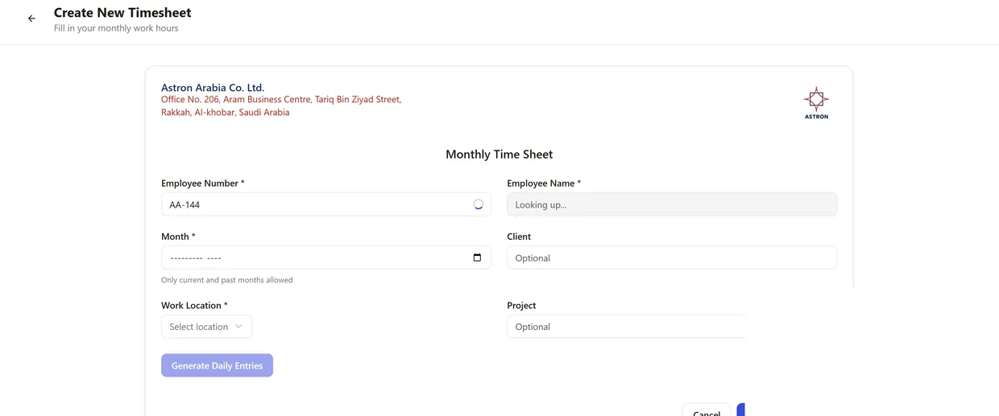

D.03 / Process automation & software
Inspection operations portal
A role-based portal that brings the day-to-day workflow and the evidence it produces into the same system.
- MY ROLE
- Technical management · Development
- DISCIPLINE
- Inspection / Engineering services
- PERIOD
- 2025–2026
- ISSUE STATUS
- Delivered application

The task
Manual timesheets and approvals created repeated data entry and made reporting dependent on reconstructing information from separate records.
My contribution
I designed and built the internal workflow and its supporting application. The portal serves five roles with branch-aware views, structured timesheet entry, review stages, and generated outputs.
What I delivered
- Timesheet entry connected to the employee register.
- Review and approval workflows with recorded status changes.
- Role-based dashboards and branch filtering.
- PDF and Excel outputs with audit records.
The result
The delivered system combines operational entry, checking, approval, and reporting in one workflow.
Screens shown here are portfolio views of the application. This site does not expose the live internal system.
